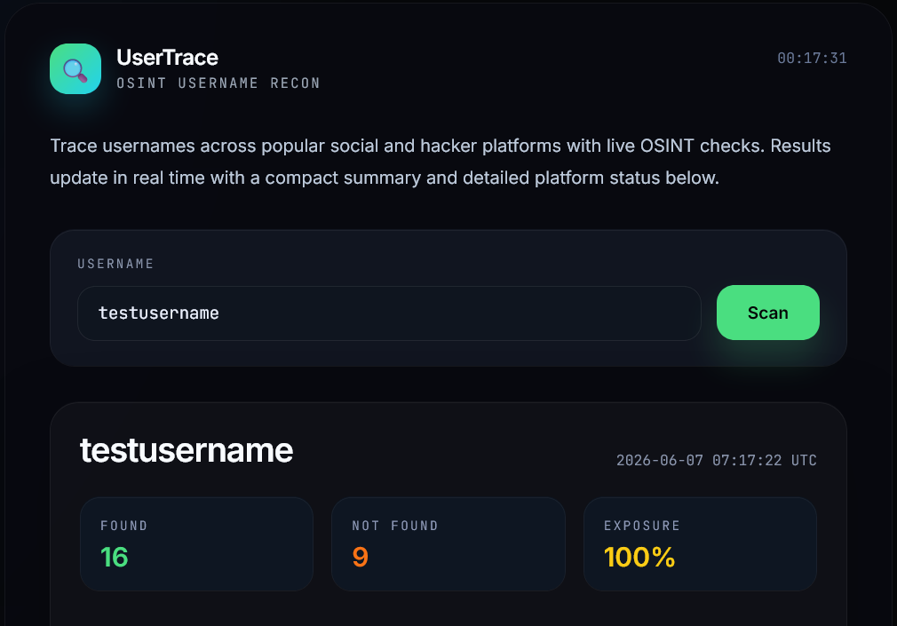
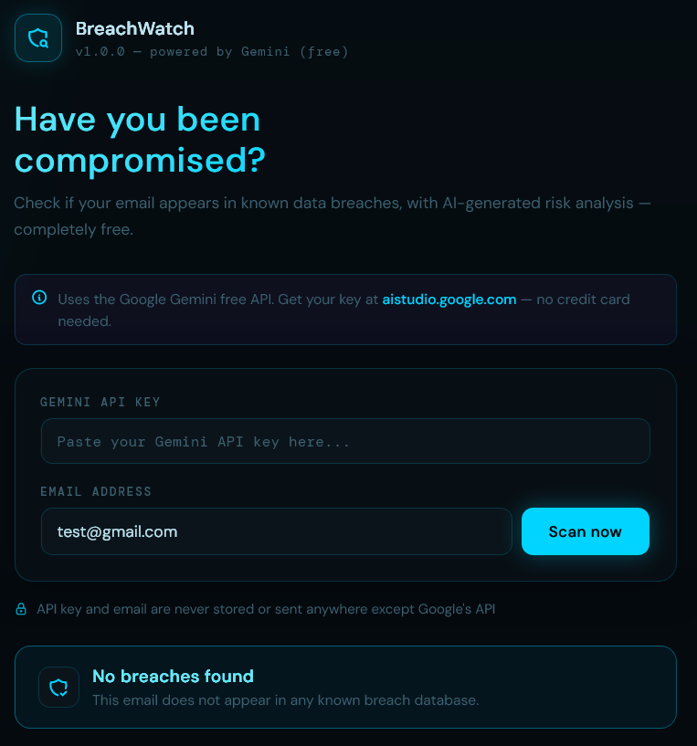
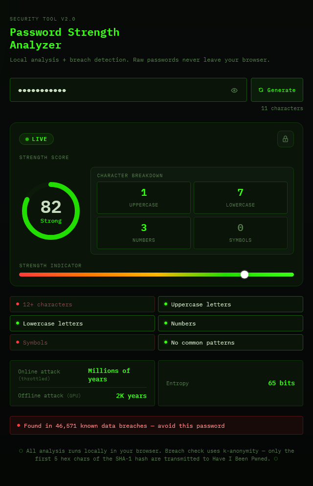

Cybersecurity graduate and security tool developer with a passion for building practical open-source solutions in OSINT, breach analysis, and password security. Experienced in leading teams, collaborating on technical projects, and turning complex security challenges into usable tools. Recognized on the Dean's List for strong academic performance and committed to continuous learning, research, and contributing to the cybersecurity community.
Who I Am
I’m a cybersecurity graduate from Liberty University focused on developing practical, privacy-conscious security tools. I’ve built and deployed three open-source projects in OSINT reconnaissance, breach detection, and password analysis, applying cybersecurity principles to real-world challenges.
Alongside my studies, I spent three years as a Restaurant Team Leader at Chick-fil-A, managing daily supply orders over $7,000, leading 15+ employee training sessions, and overseeing technology integration for staff. That experience built my ability to operate under pressure, manage complex systems, and lead teams effectively.
I'm a consistent Dean's List honoree and Chick-fil-A Remarkable Futures Scholar. I'm actively seeking a cybersecurity role where I can contribute to a security-focused team and keep building tools that matter.
Technical Skills
What I've Built
Tools I build to solve real security problems, with privacy, transparency, and impact at the core.

Maps digital footprints across 25+ platforms in real time. Finds usernames, linked accounts, and exposed URLs with live verification and exposure scoring.

Privacy-preserving breach detection using k-anonymity. Raw credentials never leave your browser. Integrates Google Gemini API for risk assessments and remediation tips.

Client-side password strength and entropy scoring with privacy-first breach checks. Helps users create stronger passwords and understand real-world attack resistance.
CTF Challenges
Documenting my approach to OSINT challenges from ctf.osint.industries, with each writeup detailing my methodology, tools used, and key takeaways.
Identified the nearest Paris metro station from a photo using storefront clues and Google Maps.
Identified the location of the two suspects based on a series of photographs and contextual clues.
Located the 2015 home address of an Interpol Red Notice subject using historical legal filings on a French public business registry.
My Background
Work Experience
Led daily operations and staff development at a high-volume location, managing supply orders, technology training, and team efficiency.
Completed hands-on projects applying industry frameworks to real-world scenarios.